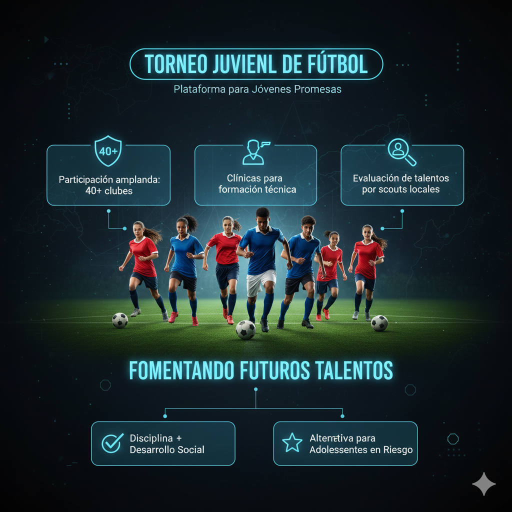

En un encuentro vibrante, la selección nacional consiguió su pase al torneo continental tras derrotar al
rival en los últimos minutos del partido. La victoria generó euforia entre aficionados y planteó
preguntas sobre la preparación del plantel para enfrentar equipos de mayor trayectoria.
El cuerpo técnico anunció una serie de amistosos para afinar la estrategia y evaluar jugadores jóvenes
que podrían incorporarse al núcleo principal. Entre las prioridades figura reforzar la línea defensiva y
la contundencia en ataque.
Gol decisivo en tiempo de descuento.
Convocatorias por revisar para el torneo.
Plan de preparación con amistosos internacionales.
La federación informó que el torneo será también una oportunidad para exhibir el talento local y atraer
inversión en programas de formación de base.
Atleta local bate récord en pista
Autor: Daniela Cruz
La atleta rompió la plusmarca nacional en los 400 metros durante el campeonato nacional, marcando un
tiempo que la coloca entre las favoritas para competencias internacionales en la temporada.
Entrenadores y expertos destacan la disciplina y el programa personalizado de entrenamiento que la llevó
a mejorar sus tiempos constantemente en los últimos dos años.
Récord nacional establecido en la final.
Posible participación en eventos internacionales.
Mayor interés de patrocinadores y academias deportivas.
Torneo juvenil promueve talento regional

Por: Comité Deportivo
El torneo juvenil que reúne equipos de distintas provincias se posiciona como una plataforma clave para
detectar jóvenes promesas. Más de 40 clubes participaron en distintas categorías y se organizaron
clínicas formativas para entrenadores y árbitros.
Padres y organizadores coincidieron en que estos espacios fomentan la disciplina y ofrecen alternativas
de desarrollo social para adolescentes en riesgo.
Participación ampliada: 40+ clubes.
Clínicas para formación técnica.
Evaluación de talentos por scouts locales.
Preparativos para los Juegos Multideportivos avanzan
Autor: Luis Fernández
Los comités organizadores informaron que las sedes principales superaron el 80% de avance en obras y que
se ultiman detalles logísticos relacionados con alojamiento y transporte de delegaciones.
Además, se anunciaron acciones para garantizar accesibilidad e inclusión de atletas con discapacidad, así
como programas culturales que acompañarán las competencias para fomentar la asistencia del público
local.
 Por: Rafael Ortiz
Por: Rafael Ortiz